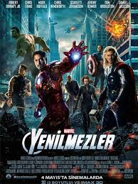

|  |
Orijinal İsmi: The Avengers
Vizyon Tarihi: 4 Mayıs 2012 Süre: 145dk Tür: Bilim Kurgu,Macera Yönetmen: Joss Whedon Senarist: Zak Penn , Joss WhedonKane IMDb: 8.0 |
Yenilmezler, Marvel’in en çok iz bırakan kahramanlarını bünyesinde topluyor: Demir Adam, Hulk, Thor, Kaptan Amerika, Hawkeye ve Black Widow. Beklenmedik bir düşman su yüzüne çıkıp dünyanın güvenliğini tehdit etmeye başlıyor. S.H.I.E.L.D. adıyla bilinen uluslararası barışı koruma teşkilâtının yöneticisi olan Nick Fury, dünyayı böylesi bir felâketten kurtarmak için bir takıma ihtiyacı olduğunu anlıyor. Takıma adam seçmek için dünyanın dört bir yanını gezmeye başlıyor. Başrollerini Robert Downey Jr., Chris Evans, Mark Ruffalo, Chris Hemsworth, Scarlett Johansson, Jeremy Renner ve Tom Hiddleston’un paylaştığı bu ekibe Stelan Skarsgard’la Samuel L. Jackson eşklik ediyor. Joss Whedon’un Zak Penn ile birlikte yazdığı hikayeden senaryolşatırdığı ve yönettiği Yenilmezler, ilki 1963 yılında basılan ve o günden beri Marvel’in en sevilen çizgi roman serilerinden biri olan “The Avengers”tan uyarlandı. Aksiyon ve olağanüstü özel efektlerle dolu, muhteşem bir filme hazır olun.